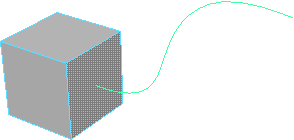
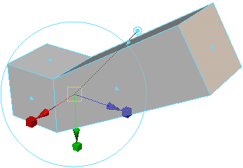
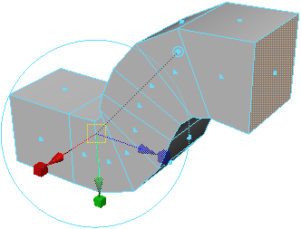
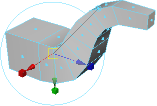
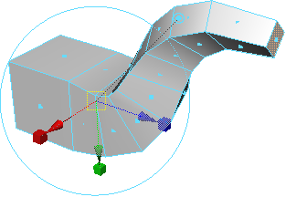

沿路径曲线挤出边或面
- 选择要挤出的边或面以及要沿其挤出的曲线。 
- 选择编辑网格 > 挤出(Edit Mesh > Extrude) >
 。
。 - 启用“选定的”(Selected)或“已生成”(Generated)选项。
- 单击“挤出”(Extrude)。 
- 使用“属性编辑器”(Attribute Editor)或“通道盒”(Channel Box)中的控件编辑挤出。
例如，增加“分段”(Divisions)数”，以便挤出的多边形更好地匹配曲线的图形。
“减少锥化”(Reduce Taper)以便挤出的多边形沿曲线逐渐变得狭窄。（也可以使用“锥化曲线”(Taper Curve)控件来创建更复杂的锥化。）
调整“扭曲”(Twist)以便挤出的多边形沿曲线旋转。
